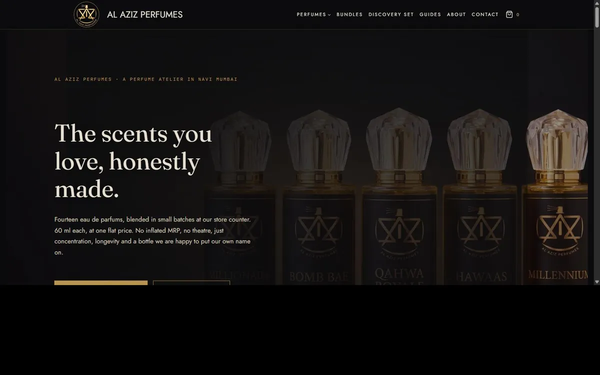

I build D2C ecommerce end to end — store, pricing, tracking, paid, organic and creative. Most stores I open are optimising ad spend against numbers that were never wired up correctly. That is usually the first thing worth fixing, and it is rarely the thing anyone is selling you.
The loop
This is the shape of every engagement, whether the deliverable this month is a campaign, a storefront or a tracking fix. Skip a stage and the next one gets more expensive to run.
Meta and Google, run against a break-even ROAS derived from the margins, not an industry average.
Storefront and checkout built to take the order without friction — catalogue, pricing architecture, guest checkout, payment gateway.
GA4, Tag Manager and Meta Pixel reconciled against the payment gateway, because a Pixel that fires is not the same as a Pixel that is correct.
Post-purchase sequences and pricing that make the second order cheaper to win than the first.
Contribution margin gets reinvested into acquisition, and the same loop runs faster the next time round.
Selected work

A single-store perfume retailer in Navi Mumbai with no online presence, selling at ₹450 and making ₹100 a unit. At that margin his break-even ROAS was 4.5x, which no one reliably hits on cold traffic — the business was not ad-viable before a rupee had been spent. So the first deliverable was not a campaign. It was a price.
I took the rest of it too: storefront, measurement, acquisition plan, organic social and every creative asset — sole operator, start to finish.
The positioning came out of the benchmark rather than a brainstorm. Fourteen eau de parfums at one flat price, no inflated MRP, no theatre. In a category built on discounting off an imaginary list price, refusing to play that game is the differentiation.
Set at launch from the unit model. These are targets to clear, not outcomes achieved.
A GST-corrected unit model replaced the ₹450 price with a ₹799 launch price, moving contribution margin from 22% to 55% and break-even ROAS from 4.5x to 1.83x. Two- and three-bottle bundles lift contribution per order to ₹786 and ₹1,136 without raising acquisition cost. Everything downstream depended on this being right first.
WooCommerce end to end. Sixteen products: fourteen signature eau de parfums, a discovery set, and a new pick-your-inspiration option sold through a dropdown. Pricing architecture, guest checkout and Razorpay integration. Live and taking orders.
GA4, Google Tag Manager and Meta Pixel with Conversions API, both live and sending the same events. Purchase events reconciled against the payment gateway rather than assumed, because a Pixel that fires is not the same as a Pixel that is correct. Event match quality sits at 6.1/10; raising it with more customer parameters is next.
Four competing fragrance brands compared on price per ml, AOV and positioning. That set the price band and pointed to a craftsman-perfumer story rather than another discount-led entrant.
A ₹15,000 per month Meta budget structured against category benchmarks, fronted by a ₹599 discovery-set offer with a coupon-driven trial-to-full-bottle funnel.
Full ownership of organic social, warming an audience for a brand starting from no digital presence at all, so the paid account was not the only thing carrying the launch.
Creative strategy and production in-house, using Gemini and Canva. Positioning came out of the benchmark, and the assets were built to carry it rather than decorate it.
Launched prepaid-only to avoid roughly ₹140 of courier loss on every failed cash-on-delivery order. The first campaign showed the cost of that: people added to cart and then stopped at payment. Next test: a partial-COD option (₹99 upfront) and the shop's 5.0-star offline reviews shown on product pages. A seven-touch WhatsApp sequence is designed for after the first order.
First campaign, as promised. I said the numbers would go here whether or not they flattered me. They don't. ₹15,000 of Meta spend produced 116 add-to-carts and 4 orders: a 3.4% cart-to-order rate and roughly ₹3,750 per order, against a target of ₹550.
The ads found demand; checkout lost it. Two causes: no cash-on-delivery option for a brand nobody had heard of, and a 5.0-star offline reputation that wasn't visible anywhere online. Both are being fixed and tested now, and the result goes here too.
If you are hiring, or your store’s numbers do not reconcile, I am easy to reach.
contact@toxuesure.in ↗Built
Reads hundreds of app reviews and ranks what customers complain about, with a quote as evidence for each label. Claude returns structured JSON, Python checks every answer against the source text, and a hand-labelled sample measures how often the model is right. Built on The Souled Store's public Play Store reviews.
One product sheet generates both the Google Merchant Center and Meta catalog feeds, with custom labels for hero products and margin tier, and flags anything likely to be disapproved before upload. A second script gives break-even ROAS per product and per offer, and checks the live campaign against its targets.
A tested prompt system (Claude writes the prompts, Gemini renders them) that produced the whole Al Aziz catalogue and its social content without a photoshoot. The formula fixes the things that make AI product shots look fake: bottle scale, light direction, prop depth.
What I do
GA4, Google Tag Manager, Meta Pixel with Conversions API. Purchase events, revenue values, deduplication, and a reconciliation against what the payment gateway actually recorded.
WooCommerce and WordPress, front and back. Catalogue, pricing, checkout flow, payment gateway, and the logistics decisions that quietly determine whether the unit economics survive contact with reality.
Meta and Google. Campaign structure, creative testing, budget allocation and offer construction, run against a break-even ROAS derived from your margins rather than an industry average.
Day-to-day ownership of the organic account. For a brand with no digital presence, this is what stops the paid account from being the only thing carrying the launch.
Positioning, offer and every asset, produced in-house with Gemini and Canva. Creative built to carry a position that came out of a benchmark rather than a brainstorm.
CAC, AOV, contribution margin, break-even ROAS, and a Power BI or GA4 view a founder can read in ninety seconds without a translator.
Tools I work in
How I work
The order matters. Spend optimising toward broken events does not merely waste budget, it teaches the algorithm the wrong lesson and the damage compounds. So measurement gets fixed first, every time, including the engagements where it is the least interesting part of the work.
I came to this from sales rather than from design, which means I think in contribution margin before I think in creative. I would rather show you a pricing model than a mood board. If the number does not move, it was decoration.
I work with a small number of brands at a time and I document what I learn in public, including the parts that did not work. There is a great deal of confident nonsense in this field and most of it is generated rather than earned.
Contact